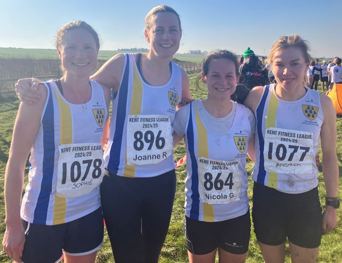

The penultimate race of this year’s Kent Fitness League took place in Allhallows Holiday Park near Rochester on Sunday February 2nd, writes Jim Knight.
Allhalows is one of the toughest courses in the 7-race series - nearly 6 miles long with sections on sand and seaweed, in mud, over ditches and with slippery wooden sections in-between. Several runners fell on the slippery surfaces, and everyone found it a really gruelling course.
26 Sevenoaks AC athletes were amongst the 443 runners who took part in cold but bright and sunny conditions.

Once again, Sevenoaks’ Andrea Berquez ran brilliantly to win the women’s race and, after 4 wins confirms her place as women’s series champion. She was closely followed in Allhallows by Nicola glover (6th and 3rd F35), with Jo Rodda (11th and 2nd F45), Cath Linney (18thand 1st F55), and Sophie Day (21st) as the other members of the scoring team.
The women’s team were beaten into second place by a strong team from Canterbury Harriers who have just ousted Sevenoaks from the top of the leaderboard in the series.
In the men’s race Sevenoaks had one of their best races of the season, coming 2nd behind a very strong team from Petts Wood. Jamie Philip had another outstanding run to place 5th (1st M45), with Jake Mears (15th), Ed Saunders (21st), Steven Hough (27th), Michael Lochead (44th), Andrew Hutchinson (46th), Keith Dowson (61st and 1st M60), and Paul Shelley (64th). Jeremy Winter had another good run to place 2nd M70.
The Sevenoaks AC results were:
| Ov Pos | Lg Pos | Bib | Runner | Age | Time | Club | Score | Rtg | # |
|---|---|---|---|---|---|---|---|---|---|
| 5 | 5 | 894 | Jamie Philip | 47 | 35:01 | Sevenoaks AC | V40:1 | 98.62 | 7 |
| 15 | 15 | 1140 | Jake Mears | 20 | 36:55 | Sevenoaks AC | M1 | 95.17 | 3 |
| 21 | 21 | 899 | Edmund Saunders | 42 | 37:39 | Sevenoaks AC | V40:2 | 93.10 | 31 |
| 27 | 27 | 873 | Steven Hough | 51 | 38:29 | Sevenoaks AC | V50:1 | 91.03 | 5 |
| 33 | 1 | 1077 | Andrea Berquez | 39 | 38:47 | Sevenoaks AC | V35 | 100.00 | 16 |
| 45 | 44 | 881 | Michael Lochead | 44 | 39:52 | Sevenoaks AC | M2 | 85.17 | 25 |
| 47 | 46 | 874 | Andrew Hutchinson | 45 | 39:57 | Sevenoaks AC | M3 | 84.48 | 27 |
| 54 | 52 | 1161 | James Ruckley | 31 | 40:25 | Sevenoaks AC | NSBLS | 82.41 | Debut |
| 64 | 61 | 857 | Keith Dowson | 61 | 41:05 | Sevenoaks AC | V60 | 79.31 | 22 |
| 68 | 64 | 1141 | Paul Shelley | 50 | 41:41 | Sevenoaks AC | V50:2 | 78.28 | 12 |
| 75 | 6 | 864 | Nicola Glover | 37 | 42:16 | Sevenoaks AC | F1 | 96.73 | 20 |
| 76 | 70 | 907 | Daniel Witt | 50 | 42:21 | Sevenoaks AC | NS | 76.21 | 77 |
| 82 | 74 | 875 | David Killpack | 39 | 42:54 | Sevenoaks AC | NS | 74.83 | 15 |
| 85 | 11 | 896 | Joanne Rodda | 48 | 43:11 | Sevenoaks AC | V45 | 93.46 | 10 |
| 102 | 91 | 888 | Shaun Mullen | 48 | 44:59 | Sevenoaks AC | NS | 68.97 | 13 |
| 118 | 18 | 880 | Catherine Linney | 55 | 45:47 | Sevenoaks AC | V55 | 88.89 | 53 |
| 130 | 21 | 1078 | Sophie Day | 36 | 46:26 | Sevenoaks AC | F2 | 86.93 | 3 |
| 146 | 121 | 844 | Brian Allen | 53 | 47:31 | Sevenoaks AC | NS | 58.62 | 11 |
| 150 | 124 | 847 | Adam Bates | 41 | 47:37 | Sevenoaks AC | NS | 57.59 | 11 |
| 154 | 128 | 878 | Leonard Lai King | 45 | 47:50 | Sevenoaks AC | NS | 56.21 | 20 |
| 176 | 145 | 859 | Andrew Evans | 54 | 49:44 | Sevenoaks AC | NS | 50.34 | 60 |
| 184 | 34 | 862 | Heather Fitzmaurice | 55 | 50:03 | Sevenoaks AC | NS | 78.43 | 83 |
| 191 | 156 | 906 | Jeremy Winter | 71 | 50:40 | Sevenoaks AC | NS | 46.55 | 14 |
| 220 | 177 | 883 | Simon Mann | 44 | 53:01 | Sevenoaks AC | NS | 39.31 | 5 |
| 241 | 49 | 905 | Rosie Williams | 56 | 54:21 | Sevenoaks AC | NS | 68.63 | 3 |
| 249 | 52 | 845 | Clare Ambrose | 56 | 54:54 | Sevenoaks AC | NS | 66.67 | 4 |
The full results are here.
Petts Wood’s win ensures that they will win the men’s series, but the women’s series and the combined team positions will be decided following the final race in Rough Common, Canterbury on February 23rd.
In the combined team competition, Sevenoaks are just one point behind Petts Wood and in the women’s competition, Sevenoaks are just one point behind Canterbury Harriers. To win the series, Sevenoaks women need to beat Canterbury in the final race and the combined team needs to finish ahead of Petts Wood. It all depends on fielding a strong fit team for the final show-down.